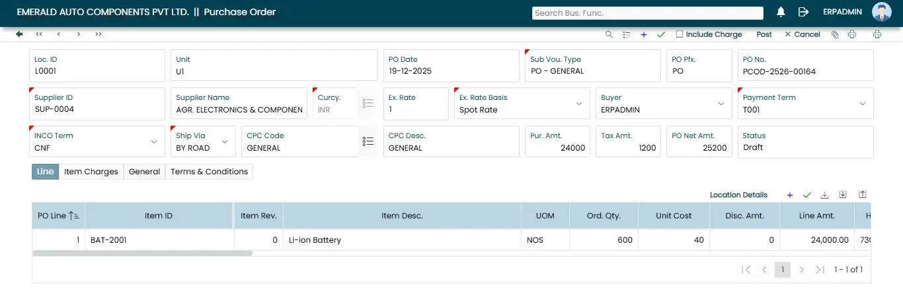

<div data-category="Operating Instructions" data-title="How to save data" data-updated="December 01, 2025" data-contributors="RoadmapIT" data-breadcrumb="Home,Operating Instructions,How to save data">
  <div class="page-content">
    <ul style="list-style-type: none; align-content: center">
      <li class="mouse-icon">
        Click on
        <i class="bi bi-check-lg fs-4 mx-1 text-success"></i>
        to save the data.
      </li>
    </ul>
    
  </div>
</div>